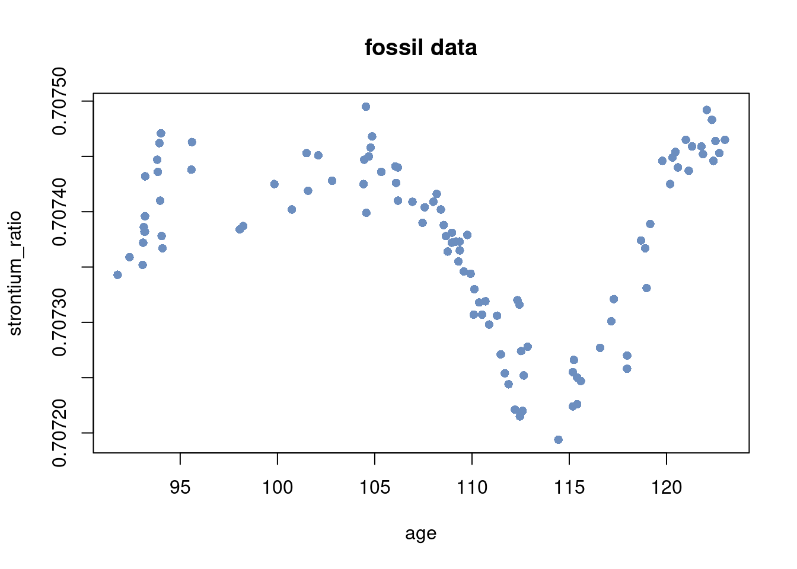

colors = c("#6C8EBF", "#c0a34d", "#780000", "#007878", "#b5c6df","#eadaaa")Bayesian nonlinear regression in RStan
Polynomial regression with L2-regularization prior
Model
This notebook illustrate how to use a polynomial regression model \[y = \beta_0 + \beta_1 x + \beta_2 x^2 + \ldots + \beta_p x^p + \varepsilon, \quad \varepsilon \overset{\mathrm{iid}}{\sim} N(0,\sigma^2)\] in rstan.
Prior
An L2-prior (ridge) is used to prevent overfitting \[\beta_j \vert \sigma^2 \overset{\mathrm{iid}}{\sim} N\Big(0,\frac{\sigma^2}{\lambda^2}\Big) \] where the regularization parameter \(\lambda\) (which is a precision = 1/variance parameter) is learned from the data. The regularization parameter is parameterized as variance \(\psi^2 = 1/\lambda\) in the sampling with the prior \[ \psi^2 \sim \mathrm{Inv-}\chi^2(\omega_0,\psi_0^2).\] The intercept is given a separate prior \[\beta_0 \sim N(0,\sigma_{0,\mathrm{intercept}}^2)\] The noise variance is assign the usual scaled inverse chi-squared prior \[ \sigma^2 \sim \mathrm{Inv-}\chi^2(\nu_0,\sigma_0^2).\]
Colors
Rstan: Install, load, use all cores and no recompile unless needed:
#install.packages("rstan", repos = c('https://stan-dev.r-universe.dev',
# getOption("repos")))
suppressMessages(library(rstan))
options(mc.cores = parallel::detectCores())
rstan_options(auto_write = TRUE)Load the fossil data 1
# Read and transform data
rawdata <- read.csv(
file = "https://github.com/mattiasvillani/introbayes/raw/main/data/fossil.csv"
)
n = dim(rawdata)[1]
y = rawdata$strontium_ratio
x = rawdata$age
plot(x, y, pch = 16, ylab = "strontium_ratio", xlab = "age", col = colors[1],
main = "fossil data")
Standardize the covariates and the response variable.
mean_y = mean(y)
mean_x = mean(x)
sd_y = sd(y)
sd_x = sd(x)
y = (y - mean_y)/sd_y
x = (x - mean_x)/sd_xSet up covariate matrix from 10 degree polynomial.
degree = 10 # polynomial degree
X = matrix(rep(0, n*degree), n, degree)
for (k in 1:degree){
X[, k] = x^k
}
p = dim(X)[2]Setup data structures used by Stan. Set prior hyperparameters values.
data <- list(n = length(y), p = p, X = X, y = y)
prior <- list(sigma0_intercept = 100, nu0 = 2, sigma20 = 0.11, omega0 = 10, psi20 = 100)Set up stan model (as a string. Can also be defined it in a separate file)
l2regression = '
data {
// data
int<lower=0> n; // number of observations
int<lower=0> p; // number of covariates
matrix[n, p] X; // covariate matrix
vector[n] y; // response vector
// prior
real<lower=0> sigma0_intercept;
real<lower=0> nu0;
real<lower=0> sigma20;
real<lower=0> omega0;
real<lower=0> psi20;
}
parameters {
real beta0; // intercept
vector[p] beta; // regression coefficients
real<lower=0> sigma2; // error standard deviation
real<lower=0> psi2; // psi2 = 1 / lambda, in the usual L2-regularization
}
model {
beta0 ~ normal(0, sigma0_intercept);
sigma2 ~ scaled_inv_chi_square(nu0, sqrt(sigma20));
psi2 ~ scaled_inv_chi_square(omega0, sqrt(psi20));
beta ~ normal(0, sqrt(sigma2*psi2));
y ~ normal(beta0 + X * beta, sqrt(sigma2));
}
generated quantities {
real<lower=0> lambda = 1/psi2;
}
'Run the HMC sampling and plot the MCMC
fit = stan(model_code = l2regression, data = c(data, prior), iter = 5000)Warning: There were 9756 transitions after warmup that exceeded the maximum treedepth. Increase max_treedepth above 10. See
https://mc-stan.org/misc/warnings.html#maximum-treedepth-exceededWarning: Examine the pairs() plot to diagnose sampling problemsWarning: Bulk Effective Samples Size (ESS) is too low, indicating posterior means and medians may be unreliable.
Running the chains for more iterations may help. See
https://mc-stan.org/misc/warnings.html#bulk-esssummary(fit)$summary
mean se_mean sd 2.5% 25%
beta0 -0.01389236 0.0021276315 0.063135045 -0.138045399 -0.05633775
beta[1] -3.52400194 0.0111750271 0.241126544 -4.009555876 -3.68280162
beta[2] -1.67907529 0.0275578504 0.576580471 -2.800814579 -2.07603401
beta[3] 3.31971208 0.0574724215 0.987671160 1.381853931 2.64771261
beta[4] 0.74777278 0.0718535545 1.324227861 -1.895757452 -0.14350235
beta[5] 0.36627902 0.0827678312 1.361738332 -2.299360384 -0.56108642
beta[6] 1.71253034 0.0692280115 1.209918025 -0.558673319 0.88984789
beta[7] -0.99266070 0.0449227946 0.745685603 -2.445005004 -1.50769746
beta[8] -1.15953057 0.0293821916 0.499419946 -2.151011087 -1.49385421
beta[9] 0.21921287 0.0081877291 0.140028630 -0.054824439 0.12407527
beta[10] 0.19475816 0.0046986964 0.079865134 0.045269899 0.13984771
sigma2 0.10668222 0.0004583484 0.015161566 0.081349453 0.09581366
psi2 76.81668633 0.8576553641 27.929910126 39.223967853 57.48476943
lambda 0.01458268 0.0001429749 0.004815615 0.006716717 0.01111593
lp__ 23.32126183 0.0681113472 2.662422827 17.359097800 21.73432753
50% 75% 97.5% n_eff Rhat
beta0 -0.01326503 0.02946410 0.10788074 880.5381 1.001567
beta[1] -3.52262330 -3.36254477 -3.05552624 465.5784 1.005194
beta[2] -1.68431168 -1.28987580 -0.53280751 437.7531 1.008938
beta[3] 3.33326858 3.98094431 5.28929259 295.3288 1.008361
beta[4] 0.77402724 1.64171493 3.30590242 339.6479 1.011155
beta[5] 0.33201474 1.30834793 3.02337766 270.6850 1.008956
beta[6] 1.69811197 2.51271768 4.12354607 305.4557 1.011171
beta[7] -0.96832199 -0.48590438 0.45618973 275.5358 1.008563
beta[8] -1.15173070 -0.80856868 -0.22824926 288.9105 1.010419
beta[9] 0.21513821 0.31529738 0.49268080 292.4871 1.007854
beta[10] 0.19249267 0.24909422 0.35206870 288.9081 1.009284
sigma2 0.10494520 0.11593692 0.13993714 1094.1997 1.001940
psi2 71.17619130 89.96095307 148.88225385 1060.5068 1.004561
lambda 0.01404964 0.01739591 0.02549462 1134.4465 1.002481
lp__ 23.66651523 25.28513956 27.53365808 1527.9710 1.003588
$c_summary
, , chains = chain:1
stats
parameter mean sd 2.5% 25% 50%
beta0 -0.01324538 0.062649637 -0.136379349 -0.05569999 -0.01255980
beta[1] -3.53222644 0.248829265 -4.042713363 -3.69151363 -3.51857114
beta[2] -1.71054468 0.585859244 -2.874854450 -2.11608115 -1.70271755
beta[3] 3.36231971 1.010359872 1.541447366 2.62830772 3.33225642
beta[4] 0.83375791 1.348187902 -1.617939839 -0.14033878 0.84662211
beta[5] 0.31033452 1.357665361 -2.496739176 -0.59069552 0.31034442
beta[6] 1.63372960 1.211135585 -0.670540897 0.79158137 1.63989775
beta[7] -0.96526420 0.728130987 -2.322805454 -1.49818688 -0.96689489
beta[8] -1.12989332 0.487493027 -2.072679972 -1.45689051 -1.14104424
beta[9] 0.21470810 0.135058768 -0.054754551 0.12146923 0.21605119
beta[10] 0.19076715 0.076310509 0.044626548 0.13723642 0.19133556
sigma2 0.10613360 0.014774395 0.081287562 0.09554318 0.10465688
psi2 76.63050777 26.685665866 39.366352798 57.44858328 71.86738252
lambda 0.01455058 0.004792963 0.007048779 0.01103226 0.01391452
lp__ 23.46057271 2.583214197 17.688947474 21.98047241 23.78860091
stats
parameter 75% 97.5%
beta0 0.02849940 0.1106916
beta[1] -3.35894730 -3.0711767
beta[2] -1.29212889 -0.6307610
beta[3] 4.05410079 5.4806210
beta[4] 1.74197237 3.4980481
beta[5] 1.31945135 2.7536842
beta[6] 2.46314795 3.9737349
beta[7] -0.46698708 0.5165205
beta[8] -0.78268091 -0.1963528
beta[9] 0.31145973 0.4697537
beta[10] 0.24187070 0.3426577
sigma2 0.11551634 0.1381092
psi2 90.64325293 141.8695456
lambda 0.01740687 0.0254024
lp__ 25.32461726 27.5104247
, , chains = chain:2
stats
parameter mean sd 2.5% 25% 50%
beta0 -0.01064841 0.060747975 -0.1234748065 -0.05321764 -0.01183980
beta[1] -3.50604729 0.225276556 -3.9314506234 -3.65862438 -3.51162339
beta[2] -1.70608149 0.550479954 -2.6961223661 -2.09417740 -1.72191672
beta[3] 3.22482011 0.895511399 1.3439320857 2.66359316 3.27105220
beta[4] 0.78313981 1.237943284 -1.7060400853 -0.03991644 0.84199684
beta[5] 0.50045271 1.241156218 -1.7000332038 -0.37873058 0.45321771
beta[6] 1.71497192 1.120102480 -0.4036225051 0.97805100 1.67727793
beta[7] -1.06504793 0.688992326 -2.5002521079 -1.50261972 -1.01729446
beta[8] -1.17534689 0.461602574 -2.0796080896 -1.47080040 -1.14801758
beta[9] 0.23243506 0.130981979 -0.0008099619 0.14100395 0.22193290
beta[10] 0.19917089 0.074235216 0.0543331697 0.14819420 0.19350578
sigma2 0.10710453 0.014968934 0.0822209720 0.09640565 0.10521886
psi2 75.15806893 26.175953619 38.7809692531 57.50822204 69.51519903
lambda 0.01478994 0.004771048 0.0071324745 0.01133350 0.01438534
lp__ 23.48790892 2.589360359 17.7699491297 21.91482169 23.80517199
stats
parameter 75% 97.5%
beta0 0.03207090 0.10856836
beta[1] -3.36130447 -3.04415491
beta[2] -1.33894825 -0.60887266
beta[3] 3.81131603 4.92968887
beta[4] 1.63228633 3.05092166
beta[5] 1.30428651 3.13184241
beta[6] 2.42340283 4.00457081
beta[7] -0.58053700 0.14595085
beta[8] -0.85783250 -0.26900664
beta[9] 0.31964368 0.49813145
beta[10] 0.25030934 0.34541931
sigma2 0.11619580 0.13889257
psi2 88.23398260 140.20394195
lambda 0.01738882 0.02578588
lp__ 25.45280696 27.60456607
, , chains = chain:3
stats
parameter mean sd 2.5% 25% 50%
beta0 -0.01682499 0.064973611 -0.147435313 -0.05994099 -0.01384853
beta[1] -3.53378673 0.238246700 -3.971603509 -3.70175623 -3.53983180
beta[2] -1.61711359 0.564903833 -2.700296748 -2.00749512 -1.63250157
beta[3] 3.38660576 0.996122109 1.312617945 2.68624006 3.44791527
beta[4] 0.60233579 1.299607338 -2.113497053 -0.23145534 0.63238386
beta[5] 0.26292208 1.415122486 -2.309223216 -0.73782309 0.15472109
beta[6] 1.81305569 1.222280505 -0.401449874 0.91292975 1.79693188
beta[7] -0.93442887 0.790068693 -2.568783137 -1.50357167 -0.89127214
beta[8] -1.18151593 0.523239321 -2.189589045 -1.57511124 -1.17753114
beta[9] 0.20830624 0.149842668 -0.091462750 0.10784668 0.20242220
beta[10] 0.19518144 0.085979887 0.040965684 0.13011230 0.19273845
sigma2 0.10700915 0.015938949 0.081461792 0.09545676 0.10474932
psi2 76.09531802 27.564634997 38.376407229 57.09653132 70.73371838
lambda 0.01470964 0.004846094 0.006696457 0.01134030 0.01413753
lp__ 23.23407133 2.713876956 17.065415000 21.65467536 23.59050943
stats
parameter 75% 97.5%
beta0 0.02874491 0.10107057
beta[1] -3.37214886 -3.05581248
beta[2] -1.27276310 -0.36847823
beta[3] 4.10845551 5.18974058
beta[4] 1.52071115 3.07395604
beta[5] 1.26787257 3.22827469
beta[6] 2.63816610 4.29591026
beta[7] -0.39437665 0.61398175
beta[8] -0.77600561 -0.26192368
beta[9] 0.31648200 0.51548351
beta[10] 0.25752504 0.35947020
sigma2 0.11670584 0.14260906
psi2 88.18107549 149.33272608
lambda 0.01751420 0.02605768
lp__ 25.23861690 27.54156017
, , chains = chain:4
stats
parameter mean sd 2.5% 25% 50%
beta0 -0.01485065 0.06396552 -0.139881560 -0.05829373 -0.01484446
beta[1] -3.52394732 0.25044933 -4.056640355 -3.67947725 -3.51954562
beta[2] -1.68256139 0.59935831 -2.829388265 -2.08923301 -1.68708647
beta[3] 3.30510274 1.03566744 1.357148068 2.61268602 3.31578961
beta[4] 0.77185761 1.39532828 -2.041002507 -0.15933968 0.76367615
beta[5] 0.39140675 1.41449503 -2.520871085 -0.53631602 0.38834198
beta[6] 1.68836414 1.27475631 -0.729982000 0.83046908 1.70482140
beta[7] -1.00590178 0.76563785 -2.415292173 -1.52582720 -0.99046110
beta[8] -1.15136613 0.52134017 -2.189635188 -1.48933130 -1.14341954
beta[9] 0.22140208 0.14243117 -0.054420818 0.12592755 0.21793471
beta[10] 0.19391314 0.08220952 0.036036972 0.14036361 0.19267739
sigma2 0.10648158 0.01492447 0.080626492 0.09598937 0.10503916
psi2 79.38285062 30.89087847 40.335448767 57.79423649 72.82698212
lambda 0.01428055 0.00483911 0.006284727 0.01081790 0.01373118
lp__ 23.10249436 2.74169634 17.026378916 21.40765720 23.42774217
stats
parameter 75% 97.5%
beta0 0.02739582 0.1107918
beta[1] -3.35923853 -3.0435809
beta[2] -1.27143135 -0.4618321
beta[3] 3.96117001 5.4997173
beta[4] 1.69109365 3.4523794
beta[5] 1.33341196 2.9480716
beta[6] 2.50020532 4.2018441
beta[7] -0.50446960 0.4947038
beta[8] -0.80465099 -0.1428257
beta[9] 0.31571342 0.4894762
beta[10] 0.24623684 0.3560637
sigma2 0.11559195 0.1389130
psi2 92.43936926 159.1159047
lambda 0.01730277 0.0247921
lp__ 25.15140368 27.4739076Footnotes
Chaudhuri, P. and J. S. Marron (1999). Sizer for exploration of structures in curves. Journal of the American Statistical Association↩︎